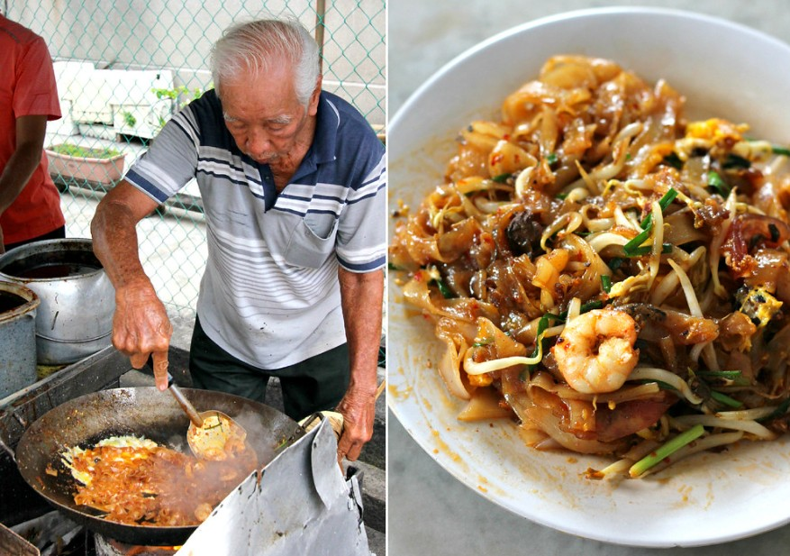

Char Kuey Teow is one of the most famous dishes in Penang, known for its smoky aroma, rich soy sauce, fresh prawns, cockles, bean sprouts, and flat rice noodles fried to perfection.
Famous Char Kuey Teow Spots
Siam Road Charcoal Char Kuey Teow
Known as the birthplace of authentic Char Kuey Teow with wok hei (smoky flavour).
Address
George Town,
10400 George Town,
Pulau Pinang
🛵🔥 The Sizzling Story of Siam Road Charcoal Char Kuey Teow 🍜✨
Once upon a time, on the tasty streets of Penang, Malaysia 🇲🇾, a small pushcart rolled onto Siam Road 🛣️. From it came a smell so delicious, people couldn’t help but follow their noses... straight to a plate of Charcoal Char Kuey Teow! 🍤🍳🌶️
At the center of it all was Uncle Tan 👴🏻 – a kind old uncle with a big smile and even bigger flavors. Back in the 1960s, he started cooking with just a wok, a ladle, and a blazing charcoal fire 🔥. No fancy stoves – just old-school magic.
- ✨ The smoky “wok hei” (the breath of the wok)
- 🍜 Slippery flat noodles
- 🦐 Juicy prawns
- 🐚 Fresh cockles
- 🌱 Crunchy bean sprouts
- 🌶️ And a spicy sambal kick!
People came from everywhere – uncles on bicycles 🚲, aunties with shopping bags 🛍️, and even tourists with big cameras 📸. Soon, Siam Road became more than a street – it was a must-visit food spot! 🌍❤️
⏳ Years passed, but the fire never went out. Today, Uncle Tan’s son has taken over the wok 👨🍳🔥. And guess what? The noodles are still just as smoky, spicy, and totally unforgettable 💫.
One bite, and you’ll know why this humble cart is a Malaysian legend.
🍜❤️🔥 #SiamRoadCharKueyTeow #PenangEats #WokHeiMagic
🔥A Taste of Tradition✨
Tucked in the heart of Penang, our legendary charcoal-fried Char Kuey Teow is more than just a dish – it’s a nostalgic journey back to authentic street food 🍲.
Cooked over a blazing charcoal fire 🔥 for that irresistible wok hei (breath of the wok), every plate is lovingly tossed with silky flat rice noodles 🍜, juicy prawns 🍤, cockles 🐚, crispy bean sprouts 🌱, and a hint of spicy magic 🌶️.
❤️ Beloved by locals and visitors alike, Siam Road Char Kuey Teow is a humble stall with a big heart – and an even bigger flavor.
📍 Come taste the legend that generations have lined up for – simple, soulful, and unforgettable.
📜 History of Char Kuey Teow
🍜 Char Kuey Teow first sizzled to life thanks to hardworking Chinese immigrants in Penang 🇲🇾, who whipped up this tasty noodle dish as a quick, wallet-friendly meal for busy workers. Over time, it transformed into a beloved symbol of Penang’s vibrant street food scene 🌟.
👨🍳 Today, this iconic dish is famous for its wok hei — the magical smoky breath of the wok 🔥. Imagine silky flat rice noodles 🍜 stir-fried with juicy prawns 🦐, fresh cockles 🐚, fluffy eggs 🥚, crunchy bean sprouts 🌱, and fragrant chives 🌿 — all tossed together in pork lard for that unbeatable flavor punch 💥!
Every bite is a party for your taste buds 🎉 — smoky, savory, and downright unforgettable!